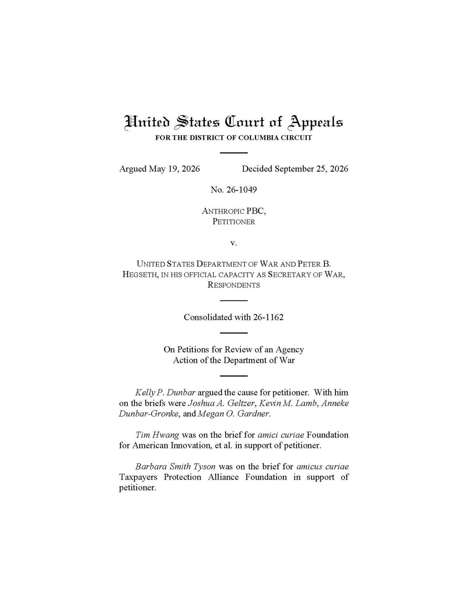
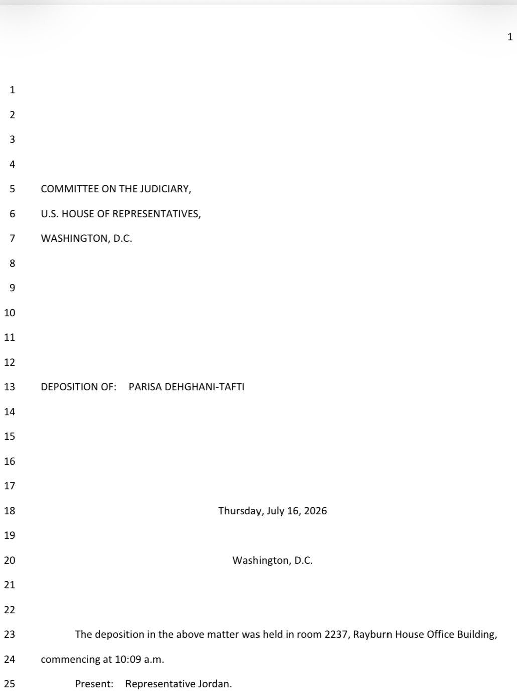
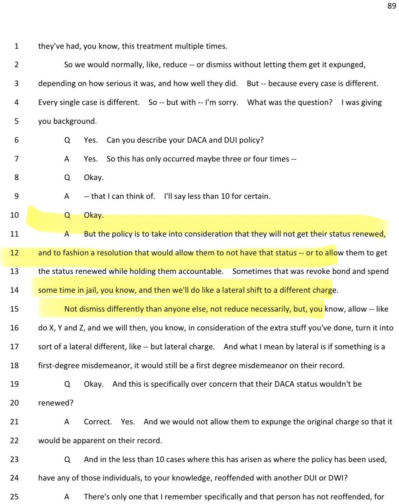

JUST IN: Trump gives Xi Jinping a private tour of the National Archives, showing him the original Declaration of Independence, Constitution, & Bill of Rights.
President Xi noted in his toast remarks that this visit has added new substance to the constructive China-U.S. relationship of strategic stability, and provided new strategic guidance for China-U.S. relations.
The two sides must act as responsible major countries, meet the expectations of the two peoples, keep pace with the trend of the times, explore a new approach for major countries to get along with each other, and write a new chapter in their friendly relations.
BREAKING: Elon Musk alongside President Trump, Chinese President Xi Jinping, U.S. First Lady Melania Trump, China’s First Lady Peng Liyuan, AMD CEO Lisa Su, NVIDIA CEO Jensen Huang, and Apple's Tim Cook.
📸 Kevin Dietsch/Getty Images
JUST IN: 🇨🇳🇺🇸 Chinese President Xi Jinping says "let us join hands and move forward side by side" with US.
EXCLUSIVE: The Trump administration is set to launch https://t.co/Hdq8KMPZkP, a new AI-powered tool designed to be a "one-stop shop" for Americans navigating the federal government, replacing what officials describe as a maze of scattered agency websites.
President Trump and Vice President Vance will unveil the platform Tuesday at an all-day event in Washington featuring Elon Musk, Nvidia CEO Jensen Huang, Blue Origin CEO Dave Limp, Secretary of State Marco Rubio, and Dr. Mehmet Oz. The event will also include panels on AI, energy, health, space, and agriculture.
The tool was built by the National Design Studio, led by AirBnB cofounder Joe Gebbia — the first-ever Chief Design Officer of the United States — who told Fox News Digital the launch marks a "new chapter of usability for the country."
Full story here
The future of flight is HERE ✈️
Over a century after Kitty Hawk, North Carolina just completed its first Advanced Air Mobility flight
The first-of-its-kind testing has the potential to create jobs, connect communities, and strengthen American leadership in aviation
A big shout-out to @NCDOT for helping make this happen for Tar Heels💪
▶ Watch on XThe D.C. Circuit has upheld @DeptofWar's decision to exclude Anthropic’s Claude from its supply chain based on risks to national security.

Arlington’s Commonwealth’s Attorney testified that her office has a DUI policy specifically for DACA recipients. In a small number of cases, prosecutors have considered changing a DUI to a different first-degree misdemeanor so the defendant can renew DACA status. (We don’t have first-degree misdemeanors - they are called Class 1 misdemeanors - surprised an elected prosecutor doesn’t know that).
She says the defendant is still held accountable and the original DUI charge remains visible. But DACA status is a factor in the plea resolution, one that an American citizen charged with the same offense cannot invoke.
Should immigration status affect which crime appears on a defendant’s record?
Source: Dehghani-Tafti deposition, p. 89, lines 6–22.


Breaking: The Supreme Court lets the Trump administration use a revamped federal voter eligibility database, which lets states use Social Security records to check voters' citizenship.
Final Vote: 🟢 Yes: 6 🔴 No: 3
JUST IN: 🇷🇺🇪🇺 President Putin says Russia is not preparing for any conflict with Europe.
Today, I had a productive call with Japanese Finance Minister Satsuki Katayama. Our conversation built on President Trump’s discussion with Prime Minister Sanae Takaichi earlier this week and reflected the strength of the U.S.–Japan partnership.
We discussed the desirability of a strong yen that reflects Japan’s strong economic fundamentals, and the importance of staying in close communication on currency markets.
Enrollment across Chicago Public Schools has fallen by more than 11,000 students this academic year compared to last, according to district officials, who pointed to migration trends and declining birth rates as root causes for the decline.
Trump cancels nearly $1B in funding for illegal immigrants and race-focused programs in new ‘pocket’ rescission
President Trump Takes Historic Action to Eliminate Wasteful and Harmful Spending